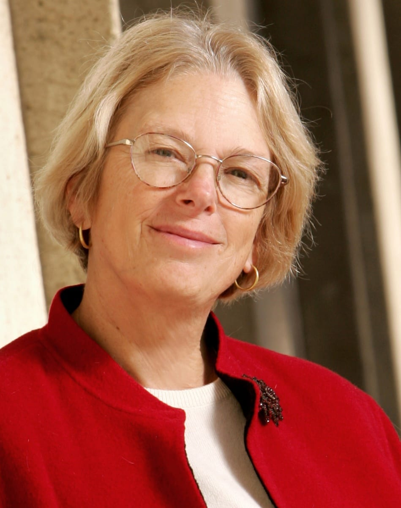
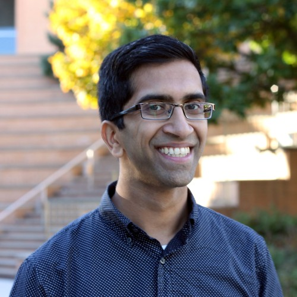

Speakers Preview
-

Pam Samuelson is a Distinguished Professor of Law and Information at Berkeley. She is a world-renowned expert in digital IP and tech policy, and is widely considered to be a pioneer in digital copyright law. Among her many accolades in both law and computing, Samuelson is a Fellow of the ACM and a recipient of a MacArthur grant. She is also a contributing editor to the Communications of the ACM and is on the board of directors of the Electronic Frontier Foundation.
Copyright Law and Software
-

Mark Lemley is a Professor of Law at Stanford, and has 200+ published articles on IP, antitrust, and robotics and AI law. He is the most-cited IP scholar in legal history, and is considered an authority in the tech law field. He is also known for advising on key tech and AI-related IP court cases.
A Primer on Privacy and Generative AI
-
Luis Villa is the co-founder and General Counsel of Tidelift, which provides tools,resources, and support for open-source projects. He is a long-time open-source attorney, who led the revision of the Mozilla Public License and served as Deputy General Counsel at the Wikimedia Foundation. He has written extensively on the copyright issues raised by generative AI.
panelist
-

Nicholas Carlini is one of the foremost researchers on security and privacy in ML systems, studying training data extraction attacks, and adversarial attacks and defenses. He has received best paper awards at USENIX Security, IEEE S&P, and ICML. He works as a researcher at Google Brain.
Empirical issues of security & privacye
-

Gautam Kamath is an Assistant Professor of Computer Science at Waterloo, and a faculty affiliate at the Vector Institute. He studies reliable and trustworthy ML, including topics pertaining to data privacy and robustness.
Theoretical issues of security & privacy
-

Kristen Vaccaro is an Assistant Professor of Computer Science at UCSD. Using mixed methods, she designs decision-making systems that emphasize user agency and control, and explores questions of fairness, justice, and policy.
Notions of user privacy & generative models